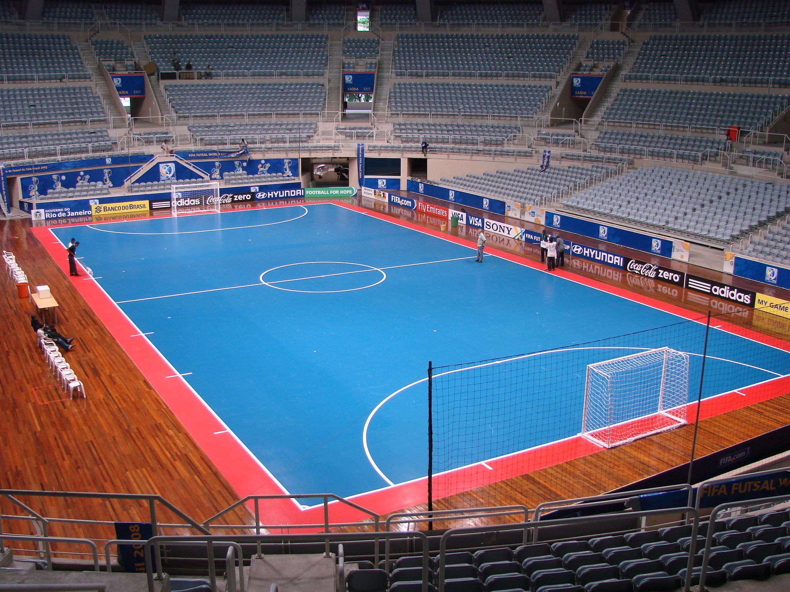

Futsal é o futebol adaptado para prática em uma quadra esportiva por times de 5 jogadores. As equipes, tal como no futebol, têm como objetivo colocar a bola na meta adversária, definida por dois postes verticais limitados pela altura por uma trave horizontal.

imagem de quadra de futsal
Futsal surgiu nos anos 30 no Uruguai. O responsável foi o professor de educação física Juan Carlos Ceriani Gravier da ACM (Associação Cristã de Moços)
Logo depois de ser inventado, o futsal chegou ao Brasil em 1935. Aqui, ele passou a ser chamado de futebol de salão.
Atualmente, a bola de futsal é mais pesada do que do futebol de campo.
Regras do futsal
No futsal nunca se deve colocar a mão na bola
O único jogador que pode é o goleiro que usa uma luva para defender a marcação de gol pela equipe adversária.
Como o futebol de campo, se um jogador cometer falta ele pode levar o cartão amarelo (advertência) ou vermelho (expulsão).